STATUS:
caninoko@dev-intel07:/mnt/scratch/caninoko/changing_env/005$ RUN=5; for j in control_glactose control_glucose control_both noreward_both punish_both; do for i in {01..30}; do mv $j"_"$RUN"0"$i $j"_00"$RUN"0"$i; done ; done
caninoko@dev-intel07:/mnt/scratch/caninoko/changing_env/003$ ~/scripts/separate_and_compress_HPCC.py -s both,glucose,glactose
rosiec@atlantis:~/research/devolab_research/changing_environments$
LOG:
rosiec@atlantis:~/research/devolab_research/evolution_of_modularity/raw_data/082/SEPARATED$ ../../../../scripts/evolution_of_modularity_pipelines/analyze.py -l ../../../../scripts sanitize rosiec@atlantis:~/research/devolab_research/evolution_of_modularity/raw_data/082/INTERTWINED$ ../../../../scripts/evolution_of_modularity_pipelines/analyze.py -l ../../../../scripts sanitize rosiec@atlantis:~/research/devolab_research/evolution_of_modularity/raw_data/082/SEPARATED$ for i in *_??????; do echo $i ; if [ -e $i/data/ ] ; then cd $i/data ; rm mutation_metrics.csv ; python ../../../../../../scripts//evolution_of_modularity_pipelines/calculate_mutation_metrics.py 5 6 8 lineage.dat ./phenotype/ > mutation_metrics.csv ; cd ../../ ; else echo "Data Directory Not Foud" ; fi ; done rosiec@atlantis:~/research/devolab_research/evolution_of_modularity/raw_data/082/INTERTWINED$ for i in *_??????; do echo $i ; if [ -e $i/data/ ] ; then cd $i/data ; rm mutation_metrics.csv ; python ../../../../../../scripts//evolution_of_modularity_pipelines/calculate_mutation_metrics.py 5 6 8 lineage.dat ./phenotype/ > mutation_metrics.csv ; cd ../../ ; else echo "Data Directory Not Foud" ; fi ; done
rosiec@atlantis:~/research/devolab_research/evolution_of_modularity/raw_data/082/SEPARATED$ ../../../../scripts/evolution_of_modularity_pipelines/analyze.py -l ../../../../scripts/ aggregate_phys_mod aggregate_funct_mod tasks fitness coalescent aggregate_mutation_metrics rosiec@atlantis:~/research/devolab_research/evolution_of_modularity/raw_data/082/INTERTWINED$ ../../../../scripts/evolution_of_modularity_pipelines/analyze.py -l ../../../../scripts/ aggregate_phys_mod aggregate_funct_mod tasks fitness coalescent aggregate_mutation_metrics
rosiec@malp:/Volumes/rosiec/research/devolab_research/evolution_of_modularity/raw_data/082/INTERTWINED$ python ../../../../scripts/generate_graphs_from_raw_data/bar_chart_from_csv.py --legend --title "Dominant Lineage Mutation Profile - Intertwined Ancestor" -y "Mean Mutations per Generation" -x "Treatment" --column_labels "Degenerate Mutations, Coding Mutations" "3,1" mean_mutations_per_generation.png control___mean_dominant_lineage_mutation_metrics.csv noreward___mean_dominant_lineage_mutation_metrics.csv punish___mean_dominant_lineage_mutation_metrics.csv rosiec@malp:/Volumes/rosiec/research/devolab_research/evolution_of_modularity/raw_data/082/SEPARATED$ python ../../../../scripts/generate_graphs_from_raw_data/bar_chart_from_csv.py --legend --title "Dominant Lineage Mutation Profile - Separated Ancestor" -y "Mean Mutations per Generation" -x "Treatment" --column_labels "Degenerate Mutations, Coding Mutations" "3,1" mean_mutations_per_generation.png control___mean_dominant_lineage_mutation_metrics.csv noreward___mean_dominant_lineage_mutation_metrics.csv punish___mean_dominant_lineage_mutation_metrics.csv rosiec@malp:/Volumes/rosiec/research/devolab_research/evolution_of_modularity/raw_data/082/INTERTWINED$ ../../../../scripts/evolution_of_modularity_pipelines/makegraphs.py -e -l ../../../../scripts/ tasks fitness phys_mod_gapmean phys_mod_gapstd funct_mod rosiec@malp:/Volumes/rosiec/research/devolab_research/evolution_of_modularity/raw_data/082/SEPARATED$ ../../../../scripts/evolution_of_modularity_pipelines/makegraphs.py -e -l ../../../../scripts/ tasks fitness phys_mod_gapmean phys_mod_gapstd funct_mod
STATUS:
rosiec@malp:/Volumes/rosiec/research/devolab_research/evolution_of_modularity/raw_data/082/SEPARATED/empty_data_directories$ ../../../../../scripts/evolution_of_modularity_pipelines/analyze.py -T 6,8 -e 4001 -l ../../../../../scripts test_progress | grep control | sort
Evolution of Modularity
- Met w/ Art about his experiments. Looking at trying my scenarios using his seed organisms.
- Submitted some runs with Exact Copy and Mutate on divide, to get some non-screwed up fixed-length organisms. Currently working on analysis for the population variation measures.Switching Environments
- Chatted with Mark Kauth @ Lenski Lab about the changing environments experiments he did with Jeff Barrick last summer. He was testing evolved fitness differences in E. Coli between changing environments vs controls in different cycle lengths. I am trying some preliminary runs with (attempted) equivalent settings in Avida. The main issue that I have is that of nailing down an equivalent mutation rate. Art was extremely skeptical of whether there even is such a thing. How do we usually handle this? Feedback is appreciated.
STATUS:
STATUS:
rosiec@malp:/Volumes/rosiec/research/devolab_research/evolution_of_modularity/raw_data/082/INTERTWINED$ ../../../../scripts/analysis/analyze.py -g control noncoding_mutations_timeseries c*_??????/data/ rosiec@malp:/Volumes/rosiec/research/devolab_research/evolution_of_modularity/raw_data/082/INTERTWINED$ ../../../../scripts/analysis/analyze.py -g control noncoding_mutations_average ./
STATUS:
rosiec@atlantis:~/research/devolab_research/evolution_of_modularity/raw_data/082$ ../../../scripts/project_specific/evomod_analyze.bash
rosiec@malp:/Volumes/rosiec/research/devolab_research/evolution_of_modularity/raw_data/082/INTERTWINED$ python ../../../../scripts/graph_generation/bar_chart_from_csv.py --title "Mutational Profile - Intertwined" --ylabel "Avg Mutations/Generation" --xlabel "Treatment" --groups 3 --legend "Coding Mutations, Degenerate Mutations, Non-Coding Mutations" average_mutations_per_generation.png control_intertwined__coding_mutations.mean.csv control_intertwined__degenerate_mutations.mean.csv control_intertwined__noncoding_mutations.mean.csv noreward_intertwined__coding_mutations.mean.csv noreward_intertwined__degenerate_mutations.mean.csv noreward_intertwined__noncoding_mutations.mean.csv punish_intertwined__coding_mutations.mean.csv punish_intertwined__degenerate_mutations.mean.csv punish_intertwined__noncoding_mutations.mean.csv
STATUS:
STATUS:
STATUS:
rosiec@atlantis:~/research/devolab_research/changing_environments/raw_data/002$ bash ../../../scripts/project_specific/changeenv_analyze.bash rosiec@malp:/Volumes/rosiec/research/devolab_research/changing_environments/raw_data/002$ bash ../../../scripts/project_specific/changeenv_makegraphs.bash
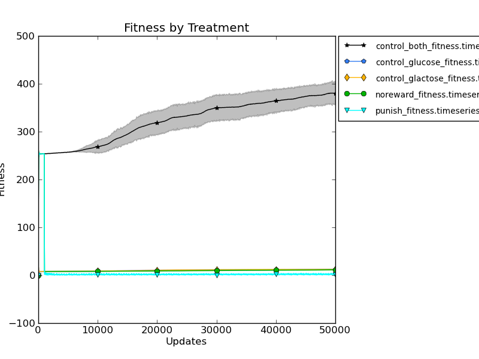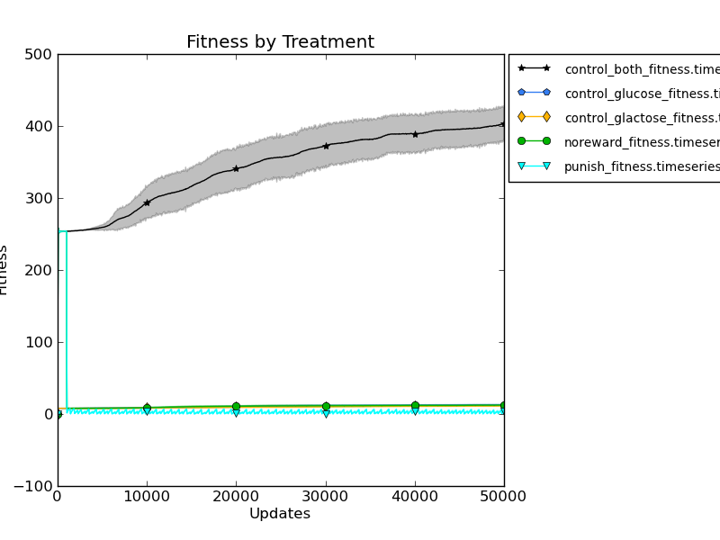
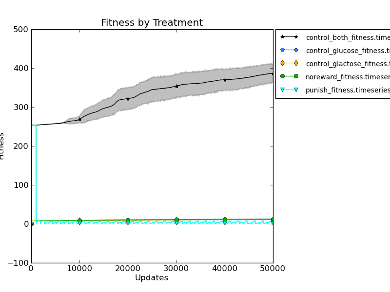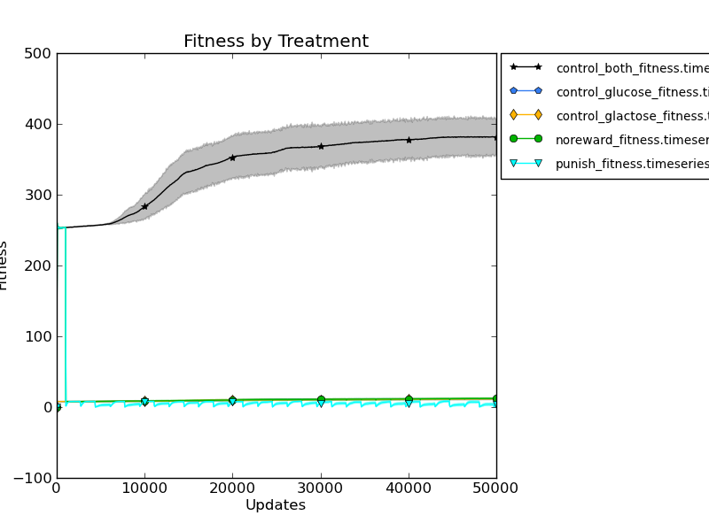
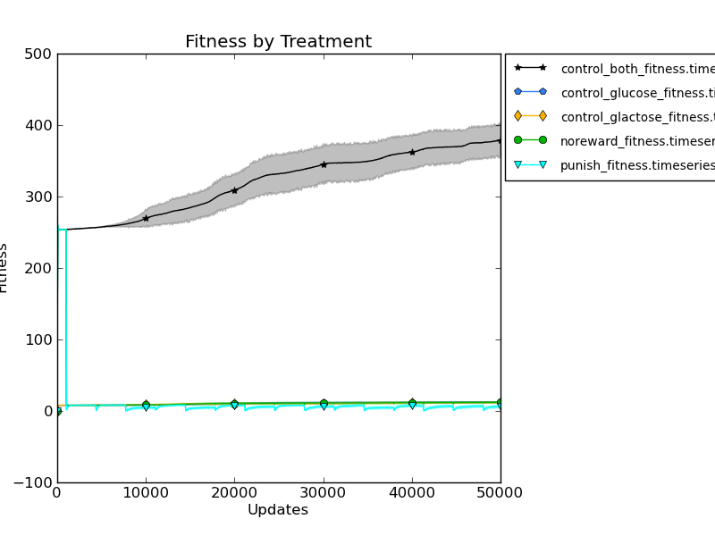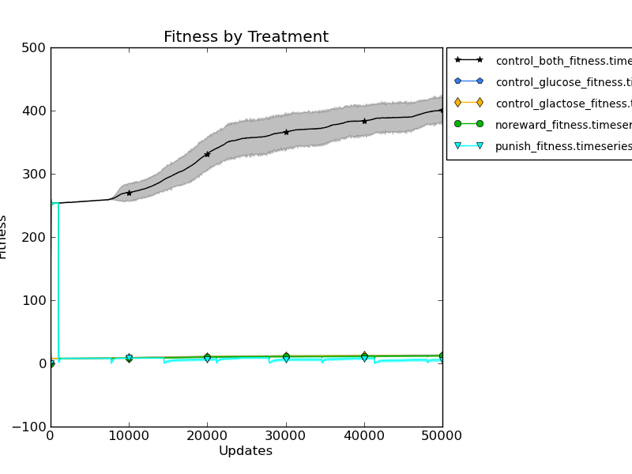
Timeseries fitness (doubling cycle time).
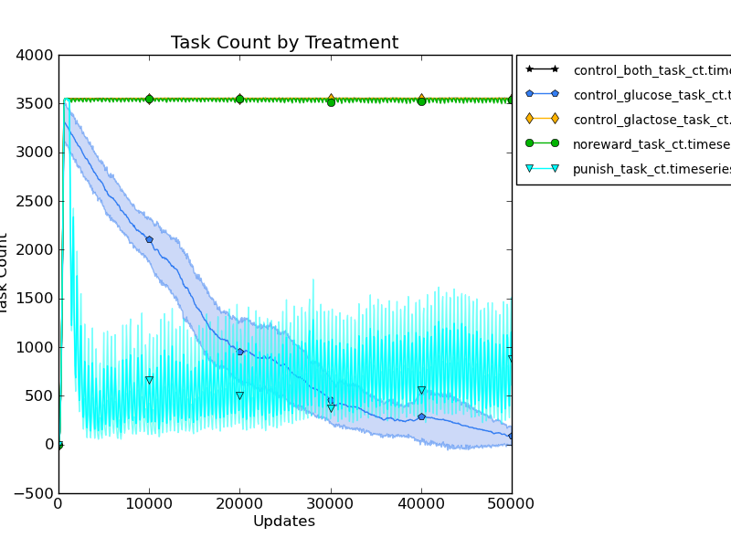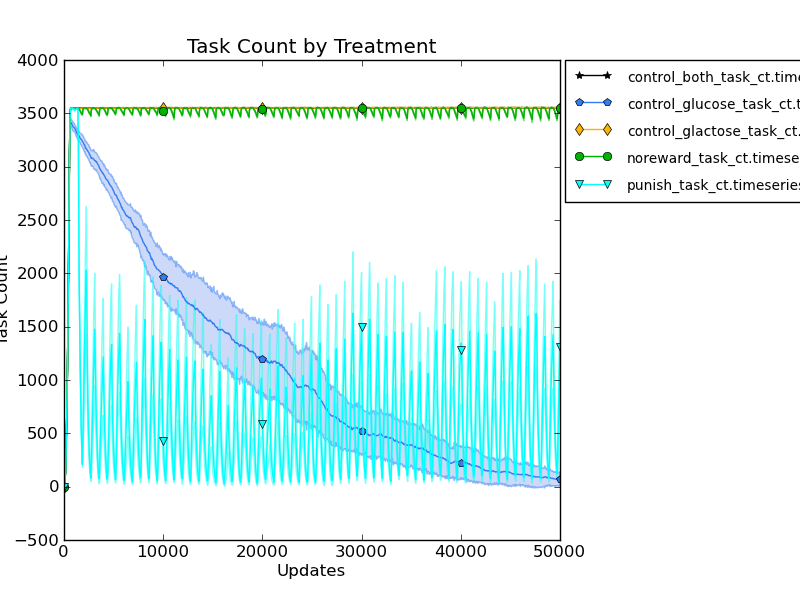
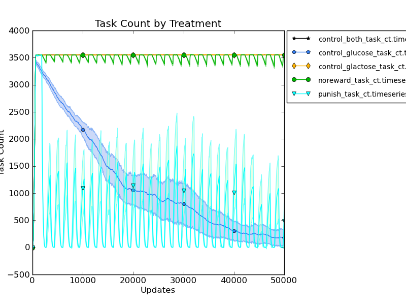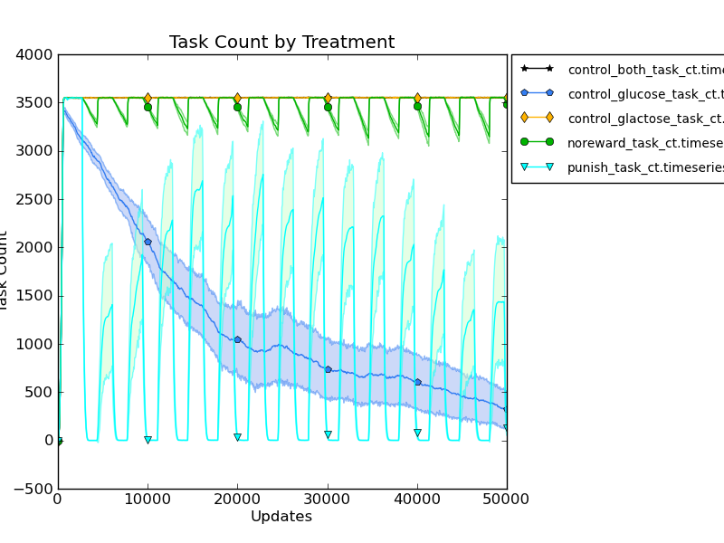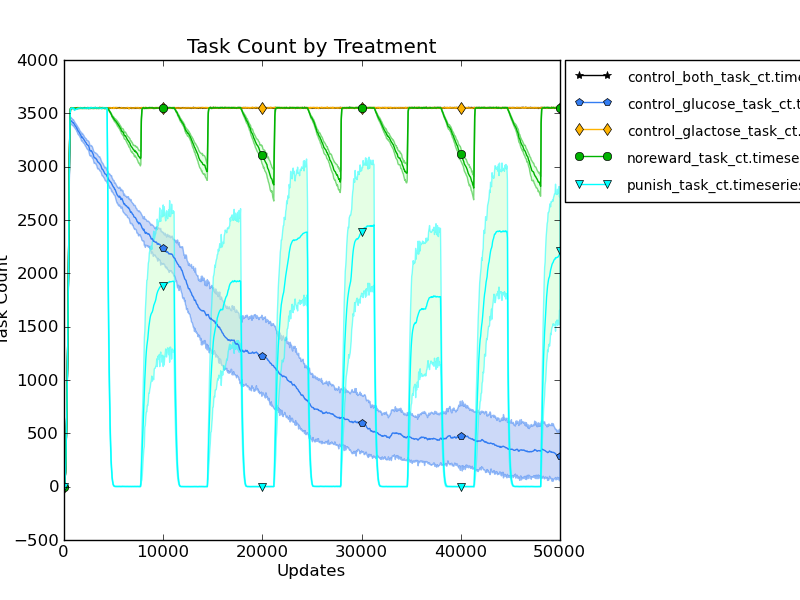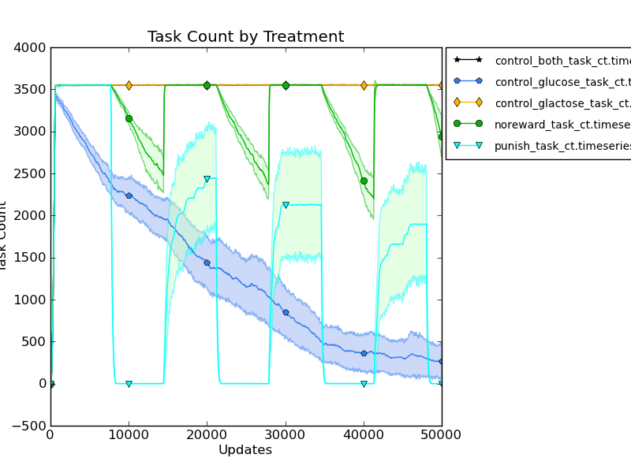
Task execution of glactose task (doubling cycle time).
rosiec@malp:/Volumes/rosiec/research/devolab_research/changing_environments/raw_data/006$ python /Volumes/rosiec/research/devolab_research/scripts/graph_generation/plot_from_csv.py -o --start_at 21 --data_sources 1 --legend --calculate_error --title "Fitness by Treatment" -y "Fitness" -x "Updates" --x_tick_intervals 50 one_task_at_a_time.fitness.timeseries.plot.error.png control_glucose_fitness.timeseries.csv control_glactose_fitness.timeseries.csv noreward_fitness.timeseries.csv punish_fitness.timeseries.csv
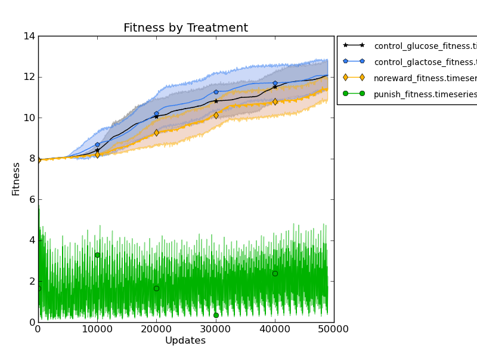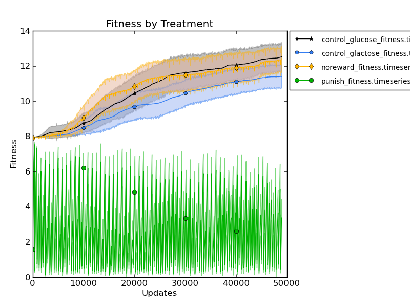
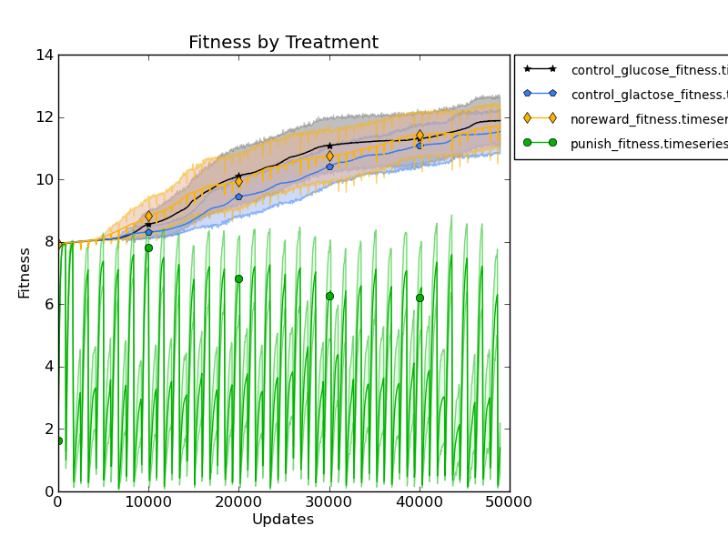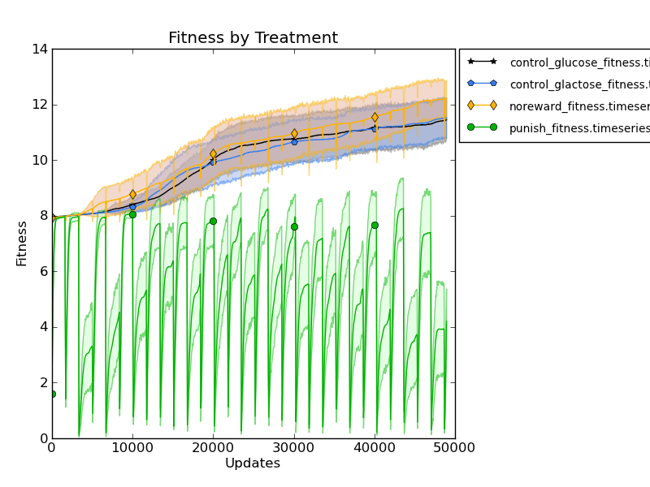
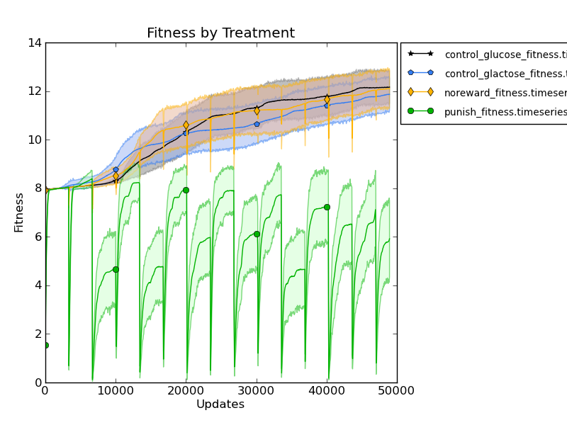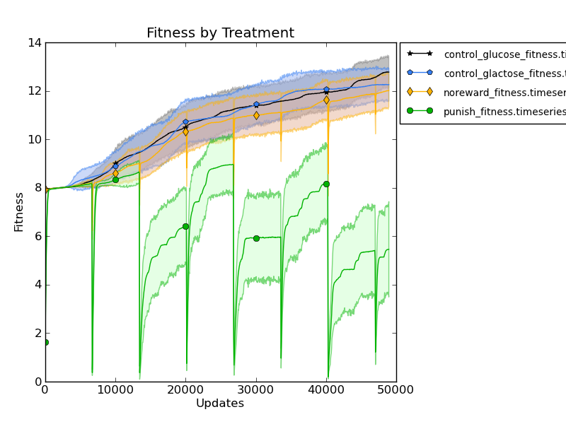
Fitnesses (no control_both) (ignoring first 21 datapoints – prior to treatment start)
(doubling cycle time).
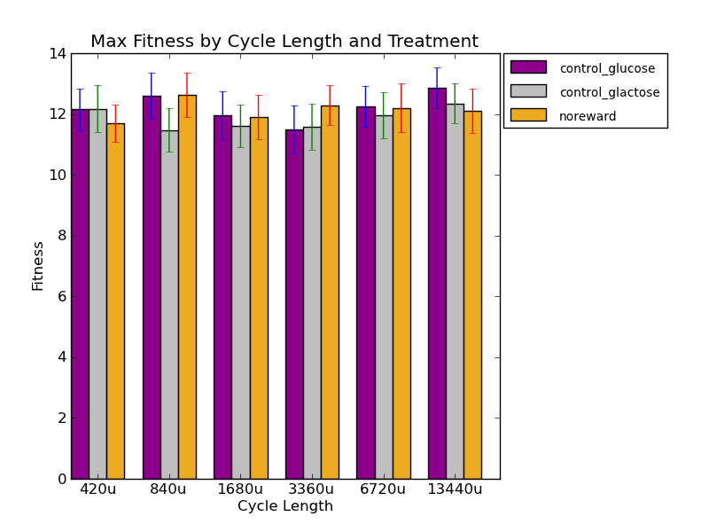
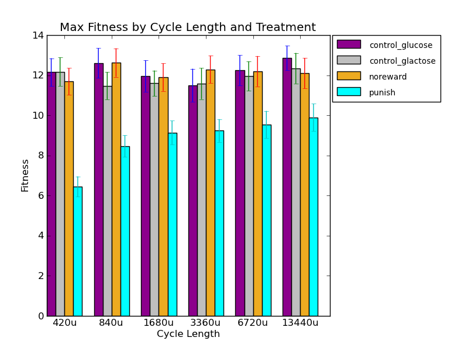